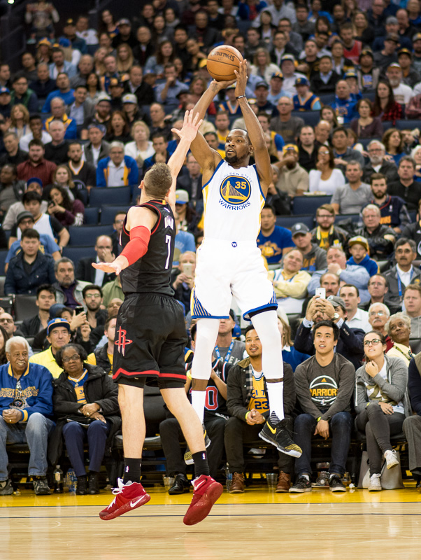
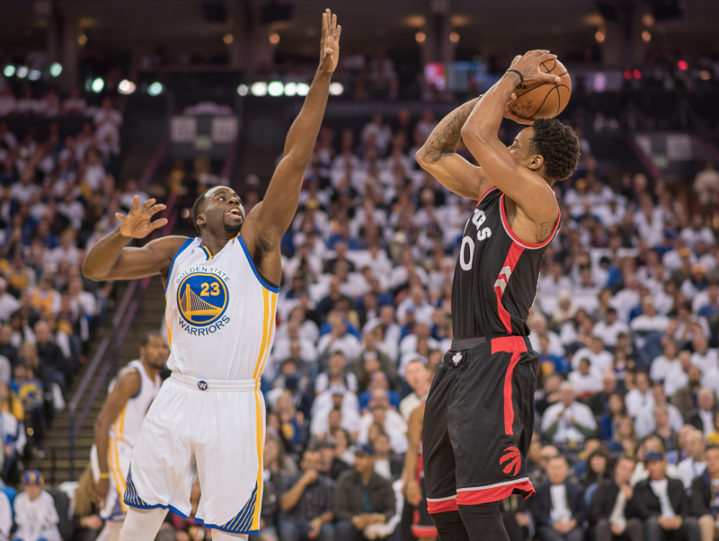

an intimate brand of sports photography

Duke standout freshman Jason Tatum dunking over rival UNC

Duke star Grayson Allen drives on Clemson
Cleveland celebrate their first Championship with Bill Russell and Commissioner Adam Silver
Kevin Durant rises for the jumper
Defensive specialist Drayond Green bothering sharp shooter Demar Derozen

Steph Curry splits two Spurs defenders for the "steffortless layup
Adam Levine of Maroon 5 at Oracle Arena in Oakland, CA

Photographer, writer, philanthropist, retired hedge fund manager
Lifelong basketball enthusiast who has participated in every aspect of the game: player, coach, fan, manager. Graduated from Duke University, which may or may not make you a fan of mine, with a BA in Physics. Previously was Senior Portfolio Manager for Apex Capital, LLC in Orinda, California for 19 years. Have evolved as a photographer of basketball, nature, and people. Sits on the National Board of Trustees of Facing History And Ourselves as well as the The Keenan Institute of Ethics at Duke. Married and proud father of two grown children who are Golden State Warriors fanatics.
Contact Danny for business inquiries